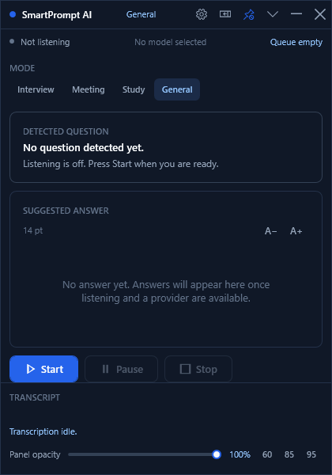

Interview
Behavioural questions get the room. Short prompts, high confidence bar, and a soft notification for anything ambiguous.
Windows desktop app · local by default
SmartPrompt AI listens to the conversation, transcribes it with whisper.cpp on your own hardware, works out which sentence was really a question, and streams a suggested answer into a small always-on-top panel. Audio is held in memory and is never written to disk.

The pipeline
Every stage is visible in the interface. You can watch the transcript arrive, see which sentence was treated as a question, and read the model that answered.
WASAPI audio capture in three shapes: your microphone, the system mix (what the machine is playing), or both at once. Level meters show what is coming in. Start and stop are always manual.
whisper.cpp runs locally through Whisper.net. Audio is cut into roughly four-second chunks, and partial and final segments arrive with their source attached so the app knows what it was listening to.
English, Filipino and Taglish strategies score each turn. Smart Hybrid answers on its own at 90 % confidence, stays quiet below 50 %, and in between it raises a soft notification you can confirm with Process now.
The question goes to Ollama — local first, cloud if you asked for it — and the answer is revealed in the panel at a pace you choose, so you can read it while the conversation continues.
Four modes
A mode changes what counts as a question and how confident the detector has to be. Switch at any time; the overlay shows the active mode.
Behavioural questions get the room. Short prompts, high confidence bar, and a soft notification for anything ambiguous.
Follow-ups count as questions. Duplicates are suppressed so the same ask does not trigger two answers.
Lower floor, so half-formed questions still surface. Useful when you are thinking out loud.
The balanced default. Nothing special-cased, everything measured the same way.
Privacy
Most assistants assume they may listen. This one starts with every door closed and only opens the one you opened.

Bring your own model
The app never hardcodes a model name. It asks the server what is installed and lets you pick the one you want to talk to.
Runs on http://localhost:11434. No key, no cost, no network. The app detects the models you have and offers them as a one-click pick.
Same API over HTTPS with a Bearer token. The endpoint, the key and the model are all yours to set, and cloud processing stays behind a consent switch.
Smart Auto Hybrid asks the cloud first and falls back to the local server the moment the cloud is unreachable or unconfigured. Local-only and cloud-first are one click away.


Your material
Paste a note or register a text file, then search it offline. Useful for the company facts, the study sheet or the answer you want to rehearse.
Early access
The Windows build is shared on request rather than posted publicly, so the rollout stays deliberate. Fill this in and your mail client will open a message to the address below — send it and you will get a reply with a build and setup notes.
Prefer plain mail? Dierther.fernandez82@gmail.com
Questions
No. Audio is captured into bounded in-memory buffers and is never written to disk. A transcript is only saved when you press save, and the history page is the only place it can appear.
Yes, with a local Ollama server. Transcription, detection and answers all run on the machine. The only feature that needs a network is Ollama Cloud, and it stays switched off until you allow it.
Question detection has dedicated strategies for English, Filipino and Taglish, including the common mixed phrasing. Transcription depends on the whisper.cpp model you install, and language selection is automatic by default.
Any model your local Ollama server has installed. The Models and Providers page asks the server for its list and offers the models as quick picks, so you are not guessing names.
Windows 10 and 11. The application is a .NET 10 WPF desktop app with native WASAPI capture and Windows DPAPI credential storage.